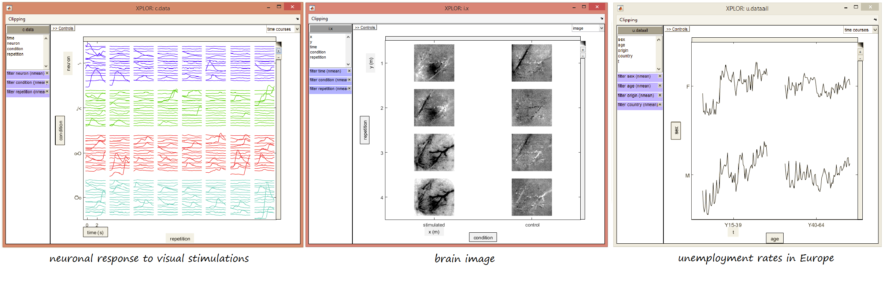

Welcome to xplor-matlab’s documentation!¶
Xplor is an opensource toolbox to visualise easily N dimensional data.

It started as a project for neuroscience at CNRS (French National Center for Scientific Research), however it can be used for any type of data as shown in the examples below.
